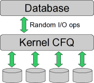
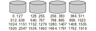
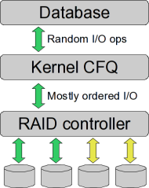

Optimizing Linux for random I/O on hardware RAID
By Osma on Monday 31 March 2008, 23:13 - Permalink
There's a relatively little known feature about Linux IO scheduling that has a pretty significant effect in large scale database deployments at least with MySQL that a recent article on MySQL Performance Blog prompted me to write about. This may have an effect on other databases and random I/O systems as well, but we've definitely seen it with MySQL 5.0 on RHEL 4 platform. I have not studied this on RHEL 5, and since the IO subsystem and the Completely Fair Queue scheduler that is default on RHEL kernels has received further tuning since, I can not say if it still exists.
Though I've heard YouTube discovered these same things, I have not yet seen a simple explanation of why this is so - so I'll take a shot at explaining it.
In short, a deployment with a RAID controller or external storage system visible to the operating system as a single block device will not reach its maximum performance under RHEL default settings, and can be easily coaxed about 20% higher on average random I/O (and significantly higher in spot benchmarks) with a single kernel parameter (elevator=noop) or equivalent runtime tuning via /sys/block/*/queue/scheduler in RHEL5, where you can also set this on a per-device basis.
We first saw this in 2005 on a quad-CPU server with a RAID controller connected to 10 SCSI disks. At that time, we found that configuring the RAID to expose five RAID-1 pairs which we then striped to a single volume using LVM increased performance despite making the OS and CPU do more work on I/O. The difference in performance was about 20%.
Our most recent proof of the same effect was a quad-CPU server connected to a NetApp storage system over FC. Since it was not convenient to expose multiple volumes from the NetApp to stripe them together, we searched for other solutions, and prompted by a presentation by the YouTube engineers looked at the I/O scheduling options and found a simple way to improve performance was to turn off I/O reordering by the kernel. Again, the overall impact between the settings was about 20%, though at times much greater.
The lesson is simple: reordering I/O requests multiple times provides no benefits, and reordering them too early will in fact be detrimental. Explaining why that is so is a bit involving, and is based on a few assumptions we have not bothered to verify, since the empirical results have supported our conclusions and got us where we wanted.
In order to keep the explanation simple, I will describe it conceptually on a very small scale. When reading this, please take this into account and understand that to measure the effect we have seen in practice, the size of the solution should be increased from what I am describing.
First, consider the case of direct-attached storage exposed to the Linux kernel as independent devices. In this configuration, the kernel maintains a per-device I/O queue, and the CFQ scheduler will reorder I/O requests to each device separately in order to maintain fair per-process balancing, low latency and high throughput. This is the configuration in which CFQ does a great job of maximizing performance, and works fairly well with any amount of spindles. As the application (a database in this case) fires random I/O, each of the spindles is executing them independently and serves requests as soon as they are issued. In other words, the system is good at keeping each of the I/O queues "hot". The sustained top I/O rate is roughly linear to the number of spindles, or with 15k rpm drives, about 1000 ops for four drives.
Now, lets introduce a hardware RAID of some sort, in particular one which is enabled to further reorder operations thanks to a "big" battery-backed up cache. Thanks to that cache, the RAID can commit thousands of write operations per second for fairly long periods (seconds), flushing them to disk after merging. On the other hand, the kernel now sees just one device, and has one I/O queue to it. The CFQ scheduler sits in front of this queue, reordering pending I/O requests. All is fine until the I/O pressure rises up to about what a single spindle can process on a sustained basis, or about 250 requests per second on those 15k drives. However, as soon as the queue starts building up, the CFQ scheduler kicks into action, and reorders the queue from random to sorted per block number (an oversimplification, but close enough).
All is good? No, it's not. The sequential blocks on that RAID volume are not truly sequential, but reside on different spindles and could thus be processed simultaneously. To demonstrate, lets assume your four-spindle array has one billion sectors or five hundred gigs per device, and further, that it is striped at 64k extents or 7.8 million stripes across each device.
On both configurations, the striping is essentially the same. Every 128 sectors or 64k is one one device, then the next one, and so on. The difference is that with LVM in place, the kernel knows this, while with the RAID, it has no idea of the layout of the array, essentially treating it as a single spindle.
Now, those couple of thousand request that were just issued, contain sequences such as writes to sectors 10, 200, 50, 300, 1020, 600, 1500 and 700. Due to the striping, four of these can be executed simultaneously, so the optimal order to issue these, of course depending on what else might be going on, is something like 10, 200, 300, 1500, 50, 700, 1020, and 600, executed through four queues: [10, 50, 600], [200, 700], [300] and [1020, 1500]. In the LVM configuration this might be what really happens. However, the single I/O queue to the RAID device will have these sorted into ascending block order, and with enough such operations in the queue, the RAID processor no longer has enough view to the queue to efficiently re-re-order them to utilize all the spindles, so only some of them are hot at any given time. TCQ should help, but in practice it won't issue enough outstanding requests to fix the problem. In our experience the top sustained rate is not more than 1.5 times one spindle, or 300-400 requests per second, while the array should really run at over the 1000 ops per second thanks to the additional persistent cache on the RAID controller.
Bottom line: CFQ is great, but only if the kernel actually knows everything about the physical layout of the media. It also looks like some of the recently introduced tuning parameters (which I know nothing about, just noted their appearance) might help avoid the worst hit. However, ultimately it doesn't matter - if your hardware allows efficient "outsourcing" of the I/O scheduling to a large secure cache, use it, and don't bother making the kernel do the job without all the information.
I hope this explanation makes sense, and that I haven't botched any important details or made wrong assumptions. Please comment if any of this is inaccurate.
PS. A tuning guide for Oracle recommends the deadline scheduler due to latency guarantees. We have not benchmarked that against noop.
Comments
I think it's the same problem like with the newest SSD devices, where the noop scheduler performs the best.
Probably, although I have no experience with SSD devices other than USB memory sticks. Would make sense though; a battery-backed RAM cache on a RAID device is essentially a type of SSD.